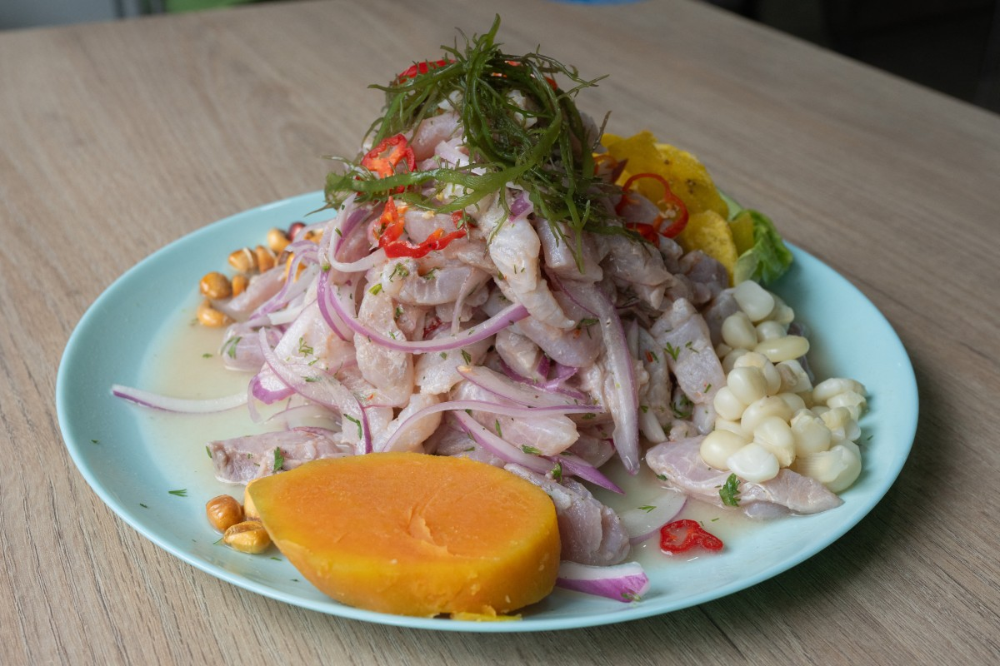
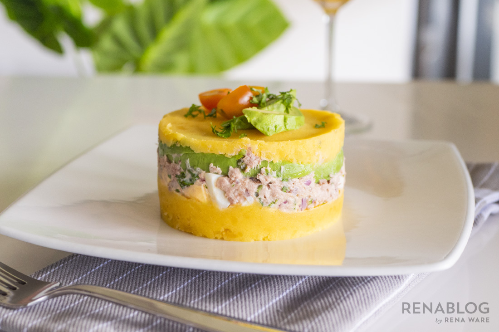
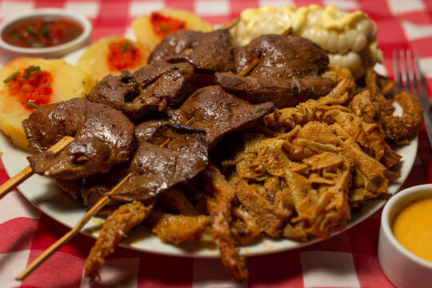
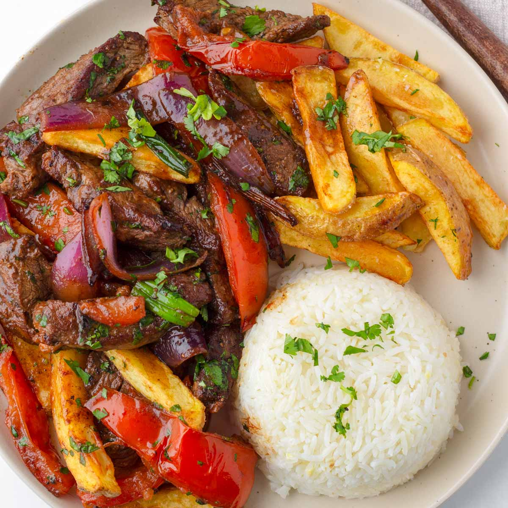
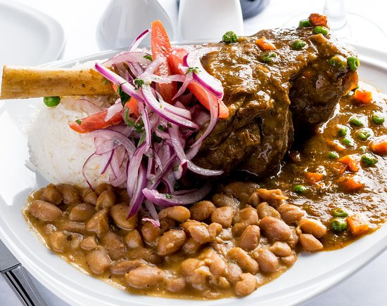
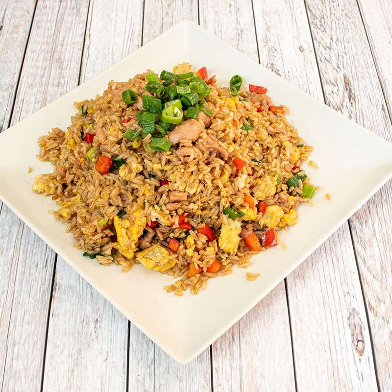
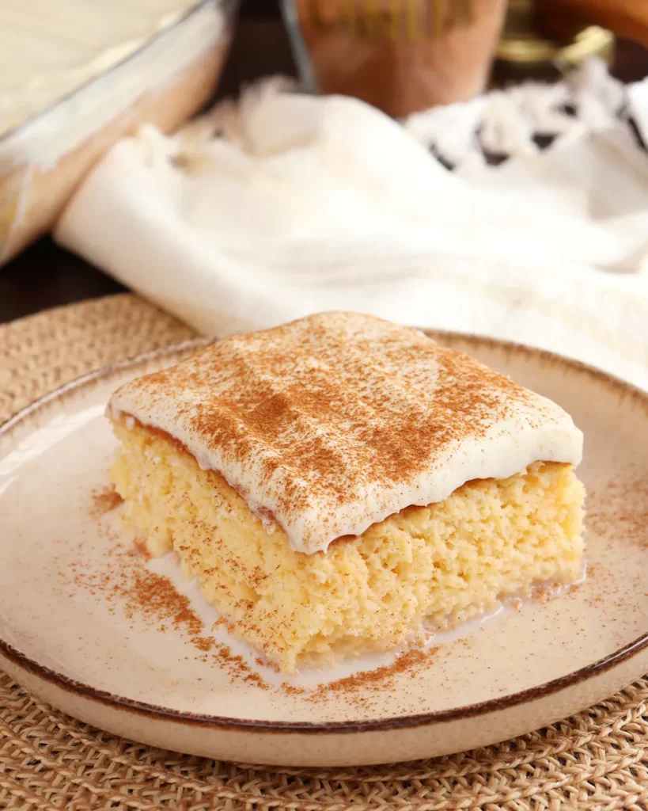
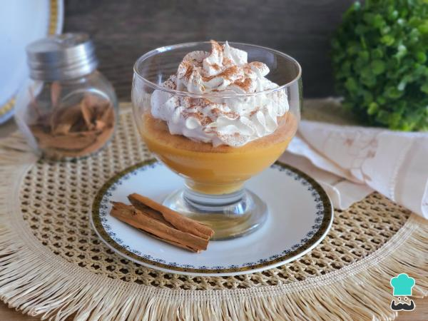
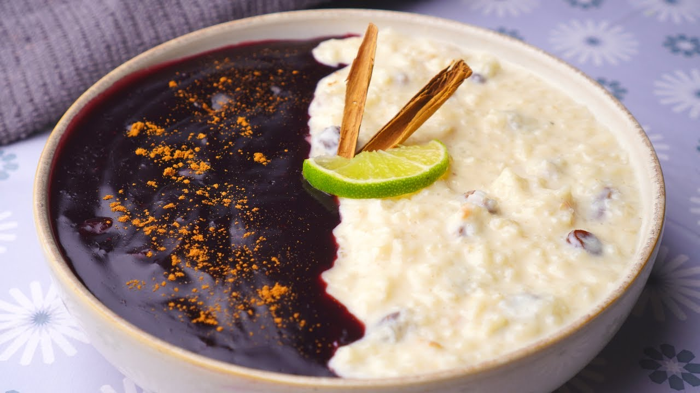

Entrantes

Ceviche Norteño
Pesca del día marinada en limón de pica, ají limo, cebolla morada, batata y choclo.

Causa Limeña
Masa de papa amarilla sazonada con ají amarillo, rellena de atún, palta y mayonesa.

Anticuchos de corazón con rachi
Carne maserada de corazon con rachi, papa, batata, choclo y salsas.
Platos Principales

Lomo Saltado
Tiras de lomo salteadas al wok con cebolla, tomate, papas fritas y arroz blanco.

Seco de Cordero a la Norteña
Guiso de cordero en salsa de cilantro y chicha de jora, servido con frijoles y arroz.

Arroz chaufa de pollo
Arroz frito con pollo, verduras, huevo y especias peruanas.
Postres

Tres Leches
Un postre tradicional hecho con tres tipos de leche, bizcocho y crema.

Suspiro Limeño
Un postre peruano hecho con leche condensada, leche evaporada y crema de leche.

Mazamorra Morada
Una deliciosa mazamorra morada, un postre tradicional peruano.